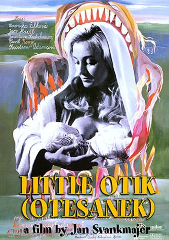

|  |
|
Emma French and Eddie Cockrell review
the new film from Jan Švankmajer, Little Otik.
- Little
Otik - Legendary Surrealist filmmaker Jan Švankmajer’s adaptation of a Czech folk tale eventually devolves into a display of naked contempt for both the subject matter and the audience. -
Emma French.
- Little
Otik - At once mischievous and cautionary, Little Otik is a
bravura display of inspired artistry, Švankmajer's most accessible
and charming feature to date, and a tribute to the painstaking work
that goes into his stop-motion technique.
- Eddie Cockrell.
|